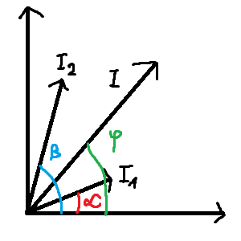
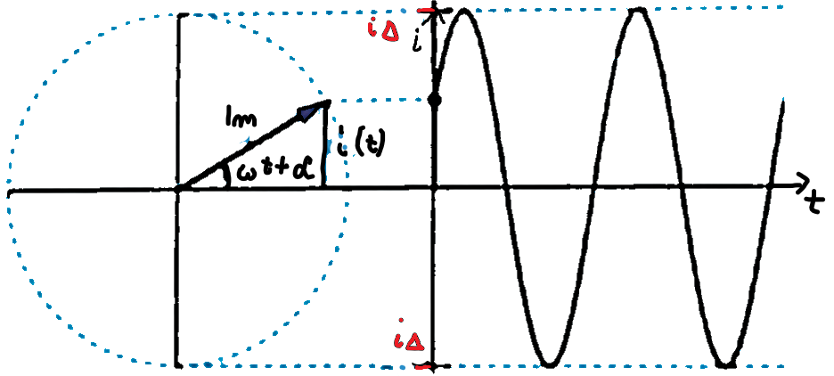
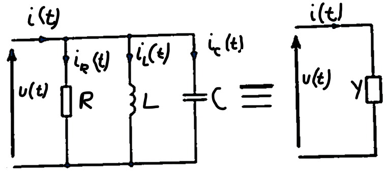

Aby dodać dwie sinusoidy o wartościach skutecznych \(I_1\) i \(I_2\), oraz kątach fazowych \(\alpha\) i \(\beta\), korzystamy z konstrukcji graficznej dla ich wskazów.
Rysujemy wskazy obydwu sinusoid.
Wskaz ich sumy powstaje jako gemotryczna (wektorowa) suma wskazów \(I_1\) i \(I_2\).
\[i_1(t) = I_{01}\sin(\omega t + \alpha)\] \[i_2(t) = I_{02}\sin(\omega t + \beta)\] \[i_1(t)+i_2(t)=I_0\sin(\omega t + \gamma)\] 
Wraz z upływem czasu odcinek ten wiruje wokół początku układu współrzędnych.
Ten wirujący odcinek nazywać będziemy wirującym wskazem przebiegu sinusoidalnego.
Sinusoida jest w pełni okreslona przez jej wirujący wskaz.
Z zależności na prąd sinusoidalny mamy \[i(t) = I_m\sin(\omega t + \alpha) \ \Rightarrow \ \frac{i(t)}{I_m} = \sin(\omega t + \alpha)\]
Wartość cwhilowa \(i(t)\) jest rzutem na oś Oy odcinka o długości \(I_0\) wychodzącego z początku układuy współrzędnych pod kątem \(\omega t + \alpha\) do osi Ox.
Sprzężeniem zespolonym nazywamy zmianę znaku części urojonej.
Operacje sprzężenia oznaczamy gwiazdką: \[(a+jb)^*=a-jb\] \[(|z|\text{e}^{j\alpha})^* = |z|\text{e}^{-j\alpha}\]
Liczby zespolone wzajemnie sprzęzone mają jednakowe części rzeczywiste i moduły, ale ich części urojone oraz argumenty są przeciwnego znaku.
Liczbą zespoloną \[\text{e}^{j\psi}\] nazywamy operatorem obrotu o kąt \(\psi\), gdyż w wyniku mnożenia liczby \(|z|\text{e}^{j\alpha}\) przez \(\text{e}^{j\psi}\) dostajemy liczbę o niezmienionym module lecz argumencie \(\alpha + \psi\), czyli obróconą o kąt \(\psi\).
Wnioski: ponieważ \(\text{e}^{j90^{\circ}}\), to
Liczba j jest operatorem obrotu o \(90^{\circ}\), zaś liczba -j jest operatorem obrotu o \(-90^{\circ}\)
Mnożenie przez j obraca liczbę o \(90^{\circ}\),
Dzielenie przez j obraca liczbę o \(-90^{\circ}\).
Dodawanie i odejmowanie liczb zespolonych najwygodniej przeprowadza się, jeżeli zapiszemy je w postaci kanonicznej: \[z_1+z_2=(a+jb)+(c+jd)=(a+c)+j(b+d)\] \[z_1-z_2=(a+jb)-(c+jd)=(a-c)+j(b-d)\]
Mnożenie i dzielenie liczb zespolonych najwygodniej przeprowadza się, jeżeli zapiszemy je w postaci wykładniczej: \[z_1z_2=|z_1|\text{e}^{ja_1}|z_2|\text{e}^{ja_2}=|z_1||z_2|\text{e}^{j(a_1+a_2)}\] \[\frac{z_1}{z_2} = \frac{|z_1|\text{e}^{ja_1}}{|z_2|\text{e}^{ja_2}} = \frac{|z_1|}{|z_2|}\text{e}^{j(a_1-a_2)}\]
Z powyższego wynika, że liczbę zespoloną \(z=a+jb\) można zapisać w tzw. postaci trygonometrycznej \[z=|z|(\cos(\alpha) + j\sin(\alpha))\] gdzie \(a=\text{arg}(a+jb)\)
Korzystając ze wzoru Eulera, dostajemy postać wykładniczą liczby zespolonej \[z=|z|\text{e}^{j\alpha}\]
Kąt \(\alpha\) pomiędzy odcinkiem łączącym punkt (a,b) z początkiem układu współrzędnych a osią rzeczywistą nazywamy argumentem liczby zespolonej i iznaczamy arg(\(a+jb\)).
Umownie argument przyjmuje wartości z przedziału od \(-\pi\) do \(\pi\).
Z rysunku otrzymujemy
\[\cos(\alpha) = \frac{a}{|z|} \ \ \ \sin(\alpha) = \frac{b}{|z|} \ \ \ \tan(\alpha) = \frac{b}{a}\]
Długość odcinka pomiędzy punktem (a,b) a początkiem układu współrzędnych nazywamy modułem liczby zespolonej \(a+jb\) i oznaczamy \(|a+jb|\)
Z rysunku wynika, że \[|z|=|a+jb|=\sqrt{a^2+b^2}\]
Część rzeczywista liczby zespolonej - oznaczamy Rez, zaś część urojoną Imz.
Jeżeli w układzie współrzędnych (x, y) będziemy na osi Ox odkładać części rzeczywiste, zaś na osi Oy części urojone, to otrzymamy tzw. płaszycznę zespoloną.
Liczbę zespoloną (a, b) interpretuje się geomtrycznie jako punkt na płaszyczźnie zespolonej.
Liczbą zespoloną nazywamy uporządkowaną parę liczb rzeczywistych (a, b)
Liczby rzeczywiste a i n stanowią odpowiednio część rzeczywistą oraz urojoną liczby zespolonej (a, b).
Liczbę zespoloną \(z=(a,b)\) zapisujemy zwykle w postaci kanonicznej \[z=a+jb\] gdzie \[j=\sqrt{-1}\] jest jednostką urojoną (w matematyce stosujemy symbol \(i\), ale w elektronice \(i\) oznacz prąd, dlatego używamy wyjątkowo \(j\)).
\(I_0\) - wartość maksymalna (amplituda)
\(i\) - wartość chwilowa
\(I_{sk}\) - wartość skuteczna
\(T\) - okres
\(f\) - częstotliwość
\(\omega\) - pulsacja
\(\alpha\) - kąt fazowy
\[f = \frac{1}{T} \ \ \ \omega = 2\pi f=\frac{2\pi}{T} \ \ \ I=\frac{I_0}{\sqrt{2}}\] \[i(t) = I_0\sin(\omega t + \alpha) = \sqrt{2}I_{sk}\sin(\omega t + \alpha)\]Zastepczy prąd stały \(I\) wywołujący takie same skutki cieplne jak prąd okresowy \(i\) nazywamy wartością skuteczną przebiegu okresowego \(i\).
Z określenie tego otrzymujemy równanie: \[RI_{sk}^2T=R\int_0^Ti^2\text{d}t\] a stąd wartość skuteczna wynosi \[I=\sqrt{\frac{1}{T}\int_0^Ti^2\text{d}t}\]
Dla sinusoidy: \[I=\frac{I_0}{\sqrt{2}}\]
W celu oceny skutku cieplnego przepływu prądu okresowego \(i(t)\) zauważymy, że prąd stały \(I\) płynąc przez rezystor o rezystancji \(R\) przez czas \(t\) wydziela energię cieplną w ilości \[W_I=RI^2t\]
Dowolny prąd \(i\) wydzieli w "niewielkim" czasie energię \(\Delta t\) energię \[\Delta W_t = Ri^2\Delta t\]
Przechodząc do infitezymalnego przedziału czasu, dostaniemy \[\text{d}W_i = Ri^2\text{d}t\]
Po scałkowaniu za okres otrzymujemy \[W_i=\int_{t=0}^T\text{d}W_i=\int_0^TRi^2\text{d}t=R\int_0^Ti^2\text{d}t\]
Jeżeli \(f(t)=F_m\sin(\omega t)\), to \[(f(t)^2)_{avg} = \frac{1}{T}\int_0^T(F_m\sin(\omega t))^2\text{d}\omega t = \frac{1}{2\pi}\int_0^{2\pi}F_m^2\sin^2(\omega t) \text{d}\omega t = F_{rms}^2=\frac{1}{2}F_m^2\]
Wartość skuteczna jest pierwiastkiem kwadratowym z wartości średniej \(f(t)^2\): \[F_{rms} = \sqrt{(f(t)^2)_{avg}} = \frac{F_m}{2} \approx 0,707 I_m\] co wyjaśnie przyczynę stosowania skrótu "rms". Można ja podać zarówno dla prądu jak i napięcia.
W obwodach prądu stałego wartość skuteczna, średnia i chwilowa są równe, dlatego nie rozróżnia się ich.
W niektórych sytuacjach interesujące są relację (międzywartościowe?) skuteczna, średnia i szczytowa. Można wtedy korzystać ze współczynników kształtu (ang. form factor) i szczytu (ang. peak factor). Współczynniki kształtu i szczytu znajdują zastosowanie w badaniach izolacji elektrycznej.
\[\text{wsp. ksztaltu} = \frac{\text{wartosc skuteczna}}{\text{wartosc srednia}} \ \ \ \text{wsp. szczytu} = \frac{\text{wartosc szczytowa}}{\text{wartosc skuteczna}}\]
W szczególności przebiegi sinusoidalne i związki (między?) można reprezentować w sposób zwięzły i przejrzysty za pomocą wektorów i liczb zespolonych. Do tego celu wykorzystuje się wartość skuteczną przebiegu elektrycznego, którą można okreslić dla prądu oraz napięcia ułatwijącą obliczanie mocy związanej z elementami obwodów. Poniżej wartości średnią i skuteczną definiujemy czysto matemtycznie. Ich fizyczna interpretacja będzie omówiona później.
Wartość średnia funkcji okresowej \(f(t)\) jest określona polem powierzchni obszaru, który wyznaczają krzywa opisana tą funkcją, granice jej okresu oraz oś czasu. Do jej obliczenia służy wzór całkowy: \[F_{avg}=\frac{1}{T}\int_{t_1}^{t_1+T}f(t)\text{d}t\] Jeżeli \(t_1=0\), to \[F_{avg} = \frac{1}{T}\int_0^Tf(t)\text{d}t\]
Funkcje sinusoidalne mają zerową wartość średnią całookresową, gdyż obszar związany z dodatnim półokresem przebiegu ma powierzchnię taką samą jak obszar wyznaczony półokresem ujmenym, więc algebraiczna suma obszarów jest równa zeru.
Fakt ten można też uzasadnić w kategoriach wielkości elektrycznych, rozpatrując średnie natężenie prądu, które jest określane ładunkiem przemieszczeniowym w ciągu okresu \(T=2\pi\), czyli \(I_{avg}=\frac{1}{T}\int_0^Ti(t)\text{d}t\). Dla prądu sinusoidalnego ten ładunek, a więc i wartość średnia są zerowe, ponieważ ładunki przemieszczane w ciągu półokresów są równe co do wartości bezwzględnej, różniąc się jedynie znakiem.
zatem \[i(t) = |Y|U_m\sin(\omega t + \theta_u + \phi) = I_m\sin(\omega t + \theta_i)\] czyli \(I_m=|Y|U_m\), zaś \(\theta_i = \theta_u+\phi\)
Nietrudno zauwazyć, że admitancja \(Y\) jest odwrotnością impedancji \(Z\) oraz że można na jej podstawie okreslic charakter obwodu. Gdy \(\phi > 0\), czyli \(i(t)\) wyprzedza \(u(t)\) o \(\phi\) obwód jest pojemnościowy, \(B_c > B_L\)
Obliczyć nateżenie pradu \(i(t)\), który płynie w obwodzie z rys.(ciekawe jakiego), gdy \(R = 100 \ \Omega\), \(C = 0,5 \ \mu F\), \(L = 100 \ mH\), a \(u(t) = 200\sin(100t) \ mV\). Szkoda, bo nie ma rozwiązanego, sadeg.
Nie ulega wątpliwości, że analiza obwodów pradu zmiennego wiąże się z obliczeniami znacznie bardziej skomplikowanymi niż w przypadku obwodów pradu stałego. Rozważanie można jednak uprościć, rezygnująć z posługiwania się wartościami chwiliowymi i stosując notacje oraz wielkości wygodniejsze w uzyciu. Jakie?
\[i_c(t) = \frac{1}{L}\int u(t)\text{d}t = C\frac{\text{d}u(t)}{\text{d}t} = \omega CU_m\cos(\omega t + \theta_u) \ \ \ \ \ \ I_m=\omega CU_m\] zaś \[i_L(t) = -\frac{1}{\omega L}U_m\cos(\omega t + \theta_u) \ \ \ \ \ \ U_m=\omega LI_m\] Zatem \[i(t) = U_m[\frac{1}{R}\sin(\omega t + \theta_u) + (\omega C - \frac{1}{\omega L})\cos(\omega t + \theta_u)]\] czyli \[i(t)=U_m[G\sin(\omega t + \theta_u) + (B_c - B_L)\cos(\omega t + \theta_u)]\] gdzie \(G\) jest konduktancją rezystora, \(B_C\) - susceptancją pojemnościową, a \(B_L\) - susceptancją indukcujną.
Niech \(B=B_C-B_L\) oznacza wypadkową susceptancje obwodu. \[i(t) = \sqrt{G^2+B^2}U_m\sin(\omega t |+ \theta_u + \arctan(\frac{B}{G}))\]
Zatem związek pradu i napięcia można opisać za pomocą dwóch wielkości, \(G\) i \(B\), ale często wygodniej jest posługiwać się jedną równoważną wielkością wektorową, zawaną admitancją i oznaczaną symbolem \(Y\). Admitancję można utoższamiać z uporządkowana parą (\(G, \ B\)) albo opisywać modułem \[|Y|=\sqrt{G^2+B^2} \ \ \ \ \ \ \phi=\arctan(\frac{B}{G}) = \arctan(\frac{B_C-B_L}{G})\]
Równoległe połączenie \(RLC\) z zaznaczonymi prądami i napięciami pokazano na rys. Na każdym elemencie wystepuje to samo napięcie, okreslone między zaciskami układu.
Wypadkowy prąd jest okreslony sumą prądów gałęziowych: \[i(t) = i_R(t)+i_C(t)+i_L(t)\] przy czym \[i_R(t) = \frac{u(t)}{R} = \frac{U_m}{R}\sin(\omega t + \theta_u)\]
